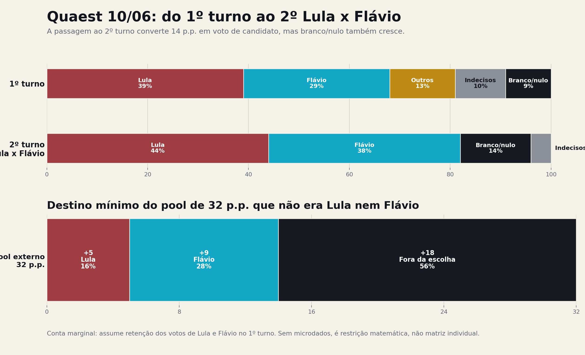
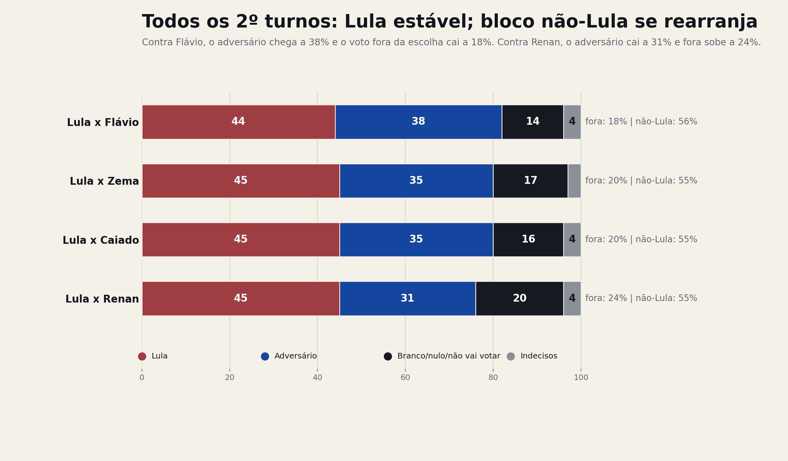
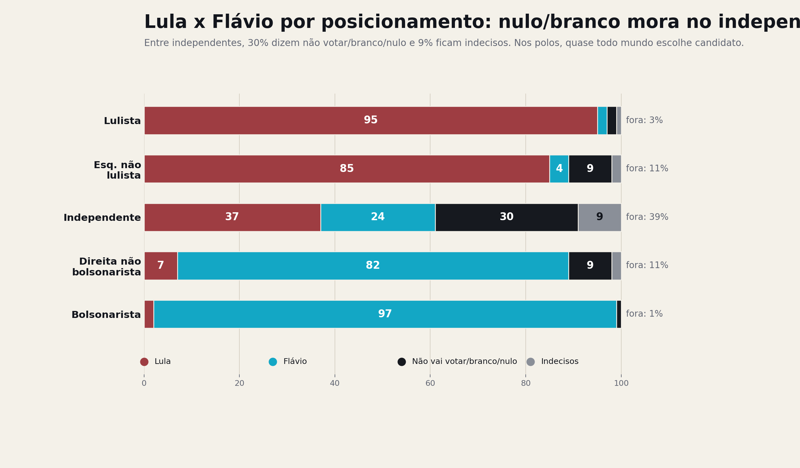
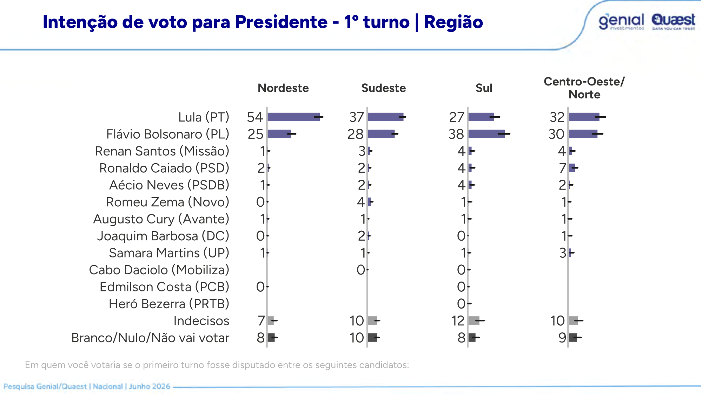

Melhor desenho do trio
Domiciliar presencial, 120 municípios, sorteio PPT de municípios e setores censitários, cotas e checagem por georreferenciamento e áudio.
A Quaest/Genial fez a melhor pesquisa de campo do trio recente — e isso torna o resto mais grave, não menos. Domiciliar, setores censitários, cotas claras: o esqueleto é sério. Mas sobre esse esqueleto vestiram um omnibus de 106 perguntas, divulgaram margem de erro calculada para um desenho que a pesquisa não tem, esconderam do PDF público as perguntas sobre trocar Flávio e sobre Trump, e mandaram a conta de R$ 433.255,92 para um banco. Quando o trabalho braçal é bom, a edição vira a única suspeita. E aqui a edição tem digitais.
Não há sinal grosseiro de fraude amostral, e este relatório não vai inventar um. O desenho de campo é o melhor entre Datafolha, Atlas e Quaest, a demografia bate com o TSE quase ao decimal e a escolaridade está colada na PNADC. Dito isso, três pecados sobram, e nenhum é venial. Primeiro: a margem de erro divulgada, ±2 pontos, pressupõe amostra aleatória simples, mas a pesquisa sorteia municípios, depois setores, depois aplica cotas e pós-estratificação — cada etapa infla a variância. Com efeito de desenho honesto, a margem real fica plausivelmente entre ±3 e ±3,5 pontos, o que transforma "Lula 44 x 38" de manchete em hipótese. Segundo: a Quaest perguntou se Bolsonaro deveria trocar Flávio, quem o substituiria e o que o eleitor acha de Trump apoiá-lo — e não publicou nada disso. Perguntar e esconder é pior do que não perguntar. Terceiro: 106 perguntas dentro da casa do eleitor, misturando voto, governo, IRPF, Banco Master, facções, tarifas, Pix e bets, é menos uma pesquisa e mais uma sabatina. E quem pagou a sabatina foi um banco.
Domiciliar presencial, 120 municípios, sorteio PPT de municípios e setores censitários, cotas e checagem por georreferenciamento e áudio.
A pergunta inclui todos os rendimentos do domicílio. Com PNADC anual 2025 visita 1, o alvo 31/42/27 ainda é mais rico que adultos 16+, mas o desvio cai bastante.
±2 pontos vale para sorteio aleatório simples de 2.004 brasileiros, coisa que ninguém faz desde que o telefone fixo morreu. Conglomerado por município e setor, mais cotas, mais pós-estratificação, produz efeito de desenho. Sem o deff publicado, a aposta conservadora é ±3 a ±3,5. Divulgar ±2 é marketing, não estatística.
Q61 e Q62 perguntam se Bolsonaro deveria trocar Flávio e quem entraria no lugar. Q63 a Q65 medem a imagem dos EUA e de Trump. Q67 mede o efeito de Trump apoiar Flávio. Tudo foi aplicado a 2.004 eleitores. Nada foi publicado. Em jornalismo isso se chama matar a pauta; em pesquisa eleitoral deveria se chamar pelo nome: curadoria política do que o público pode saber.
Os três institutos mediram a mesma disputa com instrumentos que não são intercambiáveis: ponto de fluxo presencial, painel online por recrutamento digital e domicílio sorteado por setor censitário. É a diferença entre fotografar a rua, fotografar a internet e bater na porta. A Quaest bateu na porta, e isso conta. O que os três têm em comum é menos lisonjeiro: todos divulgam margem de erro de amostra aleatória simples para desenhos que não são aleatórios simples. É o segredo de polichinelo da indústria brasileira de pesquisas, e ninguém quebra o cartel da margem mágica.
| Instituto | Campo e modo | n | 1º turno Lula x Flávio | 2º turno Lula x Flávio | Amostra / transparência |
|---|---|---|---|---|---|
| Datafolha 09/05 | Presencial em pontos de fluxo; datas públicas inconsistentes no dossiê anterior. | 2.004 | 38 x 35, vantagem Lula de 3 p.p. | 45 x 45, empate. | Demografia boa; renda mais pobre que PNAD por pessoas; sem microdados/pesos. |
| AtlasIntel 18/05 | RDR online, questionário longo e módulo audiovisual no fim. | 5.032 | 47,0 x 34,3, vantagem Lula de 12,7 p.p. | 48,9 x 41,8, vantagem Lula de 7,1 p.p. | Sexo/idade/região bons; escolaridade superior inflada; rejeição vem depois do bloco Master. |
| Quaest 10/06 | Domiciliar presencial, 120 municípios, setores censitários, cotas e rake/MrP. | 2.004 | 39 x 29, vantagem Lula de 10 p.p. | 44 x 38, vantagem Lula de 6 p.p. | Melhor desenho; escolaridade cravada na PNADC 2026T1; renda levemente mais rica; omissões pontuais relevantes. |
A Quaest declara sorteio probabilístico de municípios e setores, coleta domiciliar, checagem de áudio de 30% e georreferenciamento. Isso é materialmente superior ao ponto de fluxo do Datafolha e ao online da Atlas para cobertura territorial.
Como Datafolha e Atlas, a Quaest divulga ±2 pontos sob aproximação de amostra aleatória simples. Mas o desenho real tem dois estágios de conglomeração, cotas e pós-estratificação, cada um com seu pedágio de variância. Sem efeito de desenho publicado, ±2 é ficção de consenso: todos sabem que está errado e todos repetem, porque a margem honesta, ±3 a ±3,5, venderia menos manchete.
A Quaest perguntou se Bolsonaro deveria substituir Flávio e mediu a imagem de Trump, em plena semana do caso Master e do encontro Flávio-Trump, e não publicou nenhum desses resultados. No módulo mais sensível da pesquisa, o público recebeu o recorte, não o retrato. Quando o resultado omitido é justamente o que poderia favorecer ou desfavorecer um lado, a omissão deixa de ser editorial e vira tese.
Lula 39, Flávio 29 no estimulado; 44 a 38 no segundo turno. A foto parece confortável para o Planalto até alguém olhar o fundo: 47% aprovam o governo, 48% desaprovam, e a avaliação negativa, 38%, supera a positiva, 34%. Na espontânea, onde o entrevistador cala a boca e o eleitor fala primeiro, Lula tem 23, Flávio 17 e 56% não sabem em quem votar. Mais da metade do país ainda não decidiu a eleição que a manchete já decidiu. O retrato real é um presidente eleitoralmente forte sentado sobre um governo socialmente reprovado — e essa combinação, historicamente, não envelhece bem.
Aprovação: 47 aprova, 48 desaprova, 5 NS/NR. Avaliação: 34 positiva, 26 regular, 38 negativa, 2 NS/NR.
Espontânea ainda tem 56% de indecisos. No estimulado, indecisos são 10% e branco/nulo/não vai votar são 9%.
| Cenário | Lula | Adversário | Dif. | Leitura |
|---|---|---|---|---|
| 2º turno contra Flávio Bolsonaro | 44% | 38% | +6 | Vantagem relevante, menor que a vantagem de 1º turno porque parte do antipetismo volta para Flávio. |
| 2º turno contra Romeu Zema | 45% | 35% | +10 | Zema continua menos competitivo nacionalmente que Flávio. |
| 2º turno contra Ronaldo Caiado | 45% | 35% | +10 | Caiado fica estável, mas distante. |
| 2º turno contra Renan Santos | 45% | 31% | +14 | Renan cresce, mas ainda depende de conhecimento e transferência. |
Repare no detalhe que a manchete esconde: contra qualquer adversário, Lula está estacionado em 44/45. Quem mexe o ponteiro é a direita. Flávio faz 38, Zema e Caiado fazem 35, Renan faz 31. A eleição de 2026, segundo a própria Quaest, não é sobre quanto Lula sobe; é sobre quanto a direita consolida. E lembrando: com margem honesta de ±3/±3,5, o 44 x 38 é uma vantagem de 6 pontos com incerteza de até 7 na diferença. Estatisticamente, isso se chama jogo aberto.


A pergunta errada é "Flávio chega ao segundo turno?". A pergunta certa é aritmética: do primeiro para o segundo turno, quem captura o quê? A Quaest não publica matriz individual de transição, então fazemos o que a contabilidade chama de balanço de massa: nada se cria, nada se perde, tudo se transfere ou anula. E o balanço diz três coisas que a manchete não disse.
| Bloco | 1º turno | 2º Lula x Flávio | Variação | Leitura |
|---|---|---|---|---|
| Lula | 39% | 44% | +5 | Ganha pouco, mas ganha. Parte do eleitorado que não vota Lula no 1º turno aceita Lula contra Flávio. |
| Flávio Bolsonaro | 29% | 38% | +9 | Maior captura líquida. É o principal imã anti-Lula, mas não captura nem perto de 100% do pool externo. |
| Demais candidatos | 13% | 0% | -13 | Fonte natural de transferência, mas não necessariamente toda para Flávio. |
| Indecisos | 10% | 4% | -6 | A polarização força decisão, mas parte pode migrar para branco/nulo. |
| Branco/nulo/não vai votar | 9% | 14% | +5 | O 2º turno também produz rejeição ao binário. Esse é o vazamento central para Flávio. |
| Fora de Lula/Flávio | 32% | 18% | -14 | Do pool externo, 44% vira voto de candidato e 56% continua fora da escolha. |


| Cenário de 2º turno | Lula | Adversário | Branco/nulo | Indecisos | Fora da escolha | Inferência |
|---|---|---|---|---|---|---|
| Lula x Flávio | 44% | 38% | 14% | 4% | 18% | Flávio é o candidato que mais consolida o anti-Lula e minimiza a fuga para fora da escolha. |
| Lula x Zema | 45% | 35% | 17% | 3% | 20% | Zema recebe muita transferência de direita, mas retém menos que Flávio no agregado. |
| Lula x Caiado | 45% | 35% | 16% | 4% | 20% | Caiado se parece com Zema: forte entre direita, mas sem o mesmo bônus bolsonarista nacional. |
| Lula x Renan | 45% | 31% | 20% | 4% | 24% | Renan perde mais voto para branco/nulo. O voto de protesto não vira automaticamente voto governável. |
| Subcampo no 1º turno | Quem tende a representar | Por que não transfere 100% para Flávio | Como Flávio tenta puxar voto útil |
|---|---|---|---|
| Caiado / centrão raiz | Centro anti-Bolsonaro, governismo local, agronegócio, segurança pública, eleitor de ordem e gestão estadual. | Quer previsibilidade, pacto federativo, máquina política e menor custo institucional. Pode ver Flávio como risco de conflagração. | Endosso de governadores, prefeitos e segurança pública; mensagem de governabilidade e coalizão, não só guerra cultural. |
| Zema / Novo | Anti-PT liberal, lavajatista, antibolsonarista, renda mais alta, mercado, gestão e antipatrimonialismo. | Parte desse eleitor é anti-Lula, mas também anti-Bolsonaro. Sem âncora econômica e institucional, prefere nulo ou adversário menos tóxico. | Equipe econômica crível, regra fiscal, privatização, compromisso institucional e sinal de que não é só continuidade familiar. |
| Renan / MBL | Anti-PT ideológico com identidade própria, neocentro, liberalismo de guerra cultural e comunidade de alta adesão. | O ativo eleitoral dele é justamente não ser bolsonarista tradicional. Transferir 100% para Flávio destruiria a marca de independência. | Voto útil anti-Lula sem humilhar a tribo: pauta anticorrupção, STF, segurança, liberdade econômica e espaço simbólico para o MBL. |
| Aécio / centro velho | Anti-PT histórico, PSDB residual, liberal-conservador moderado, eleitor de normalidade institucional. | Carrega memória anti-PT, mas não necessariamente tolera bolsonarismo. Pode ir para Flávio, nulo ou Lula por rejeição ao caos. | Normalização por elites políticas, empresariais e jurídicas; menos ataque pessoal e mais alternância responsável. |
Flávio cresce 9 pontos do primeiro para o segundo turno, o maior ganho líquido de qualquer candidato em qualquer cenário. Esse número tem nome: voto útil reprimido. É gente que hoje marca Zema, Caiado, Renan ou indeciso, mas que diante de Lula aperta o botão Flávio. Se a direita antecipasse esse movimento para o primeiro turno, Flávio sairia de 29 para a vizinhança de 38, e a eleição mudaria de natureza antes de outubro.
Sem cross-tab 1º turno x 2º turno, não dá para cravar se esses 9 p.p. vêm de Zema, Caiado, Renan, Aécio, indecisos ou branco/nulo. Qualquer matriz individual é modelo, não observação.
O bloco não-Lula é grande e estável, 55/56%, mas nem todo ele vira adversário. Flávio é o melhor consolidador, porém ainda deixa 18% fora da escolha contra Lula.
| Fonte no 1º turno | Tamanho | Para Lula | Para Flávio | Para branco/nulo/NS | Hipótese política |
|---|---|---|---|---|---|
| Demais candidatos | 13% | 3% | 7% | 3% | Caiado puxa centro/centrão raiz; Zema e Renan puxam anti-PT liberal/lavajatista anti-Bolsonaro. A maior parte tende a Flávio, mas a identidade anti-Bolsonaro gera vazamento. |
| Indecisos | 10% | 2% | 2% | 6% | Indeciso tardio é menos ideológico; parte decide contra Flávio, parte rejeita a escolha binária. |
| Branco/nulo/não vai votar | 9% | 0% | 0% | 9% | Conservadoramente, tratamos esse grupo como quase estrutural no 2º turno. |
| Total do modelo | 32% | 5% | 9% | 18% | Fecha exatamente o 44 x 38 x 14 x 4 publicado. É plausível, não é microdado. |
Este quadro é um cenário de trabalho consistente com os marginais da Quaest e com os demais 2º turnos. A transferência real pode trocar alguns pontos entre “demais candidatos” e “indecisos”, mas não escapa da restrição agregada: Flávio precisa ganhar 9 p.p. e o bloco fora da escolha termina em 18 p.p.

O eleitor de Caiado quer centrão raiz, ordem e máquina? O de Zema/Novo quer liberalismo anti-PT sem Bolsonaro? O de Renan/MBL quer identidade neocentro e anticorrupção sem se render ao clã? O independente que anula rejeita ambos ou só não acredita que Flávio governe? Cada resposta pede uma estratégia diferente.
O argumento mais forte para Flávio é simples: ele faz 38 contra Lula, acima de Zema/Caiado em 35 e Renan em 31. A direita teria que antecipar esse voto útil no 1º turno, sem tratar Zema, Caiado e Renan como se fossem o mesmo eleitor.
Para Caiado: governabilidade e segurança. Para Zema/Novo: economia, gestão e regra fiscal. Para Renan/MBL: anticorrupção, liberdade econômica e anti-PT sem submissão simbólica. Um discurso único desperdiça voto.
Branco/nulo sobe de 9 para 14 no Lula x Flávio. A direita precisa tratar esse eleitor como alvo principal, não como resíduo: sem ele, a transferência fica capenga e Lula preserva vantagem.
Aqui a Quaest merece o elogio que vamos cobrar caro depois. Sexo, idade e região batem com o cadastro do TSE quase ao decimal: mulheres 53,0 contra 52,8, jovens 31,0 contra 31,4, idosos 23,0 contra 23,3. Escolaridade bate com a PNADC trimestral: 41/40/19 contra 41,1/39,6/19,3. Isso não acontece por sorte; acontece quando alguém faz o trabalho. Os dois senões: o Sudeste entra com 41,0% quando o TSE manda 42,1%, e o alvo de renda, 31/42/27, é mais rico do que o Brasil adulto da PNADC anual 2025, que dá 35,4/39,2/25,3. Quatro pontos a menos de eleitor de até 2 salários mínimos, justamente a faixa onde Lula faz 50 a 23. Curioso: o único desvio sistemático do alvo joga contra o líder da pesquisa, não a favor. Quem quiser acusar a Quaest de inflar Lula vai ter que explicar por que ela montou um alvo que o desinfla.
| Dimensão | Corte | Quaest | Referência | Delta | Fonte |
|---|---|---|---|---|---|
| Sexo | Mulher | 53,0% | 52,8% | +0,2 | TSE 05/2026, Brasil sem exterior. |
| Sexo | Homem | 47,0% | 47,2% | -0,2 | TSE 05/2026, binário. |
| Idade | 16-34 | 31,0% | 31,4% | -0,4 | TSE 05/2026. |
| Idade | 35-59 | 46,0% | 45,3% | +0,7 | TSE 05/2026. |
| Idade | 60+ | 23,0% | 23,3% | -0,3 | TSE 05/2026. |
| Região | Sudeste | 41,0% | 42,1% | -1,1 | TSE 05/2026. |
| Região | Nordeste | 27,0% | 27,6% | -0,6 | TSE 05/2026. |
| Região | Sul | 15,0% | 14,5% | +0,5 | TSE 05/2026. |
| Região | Norte | 9,0% | 8,3% | +0,7 | TSE 05/2026. |
| Região | Centro-Oeste | 8,0% | 7,6% | +0,4 | TSE 05/2026. |
| Escolaridade | Fundamental / médio incompleto | 41,0% | 41,1% | -0,1 | PNADC trimestral 2026T1, 16+, V1028. |
| Escolaridade | Médio / superior incompleto | 40,0% | 39,6% | +0,4 | PNADC trimestral 2026T1, 16+, V1028. |
| Escolaridade | Superior completo+ | 19,0% | 19,3% | -0,3 | PNADC trimestral 2026T1, 16+, V1028. |
| Renda | Até 2 SM | 31,0% | 35,4% | -4,4 | PNADC anual 2025 visita 1, adultos 16+, renda domiciliar total efetiva, V1032. |
| Renda | Mais de 2 a 5 SM | 42,0% | 39,2% | +2,8 | PNADC anual 2025 visita 1, adultos 16+. |
| Renda | Mais de 5 SM | 27,0% | 25,3% | +1,7 | PNADC anual 2025 visita 1, adultos 16+. |
Atualização feita: a régua PNAD local agora usa exatamente as duas vintages citadas pela Quaest, PNADC trimestral 2026T1 para instrução e PNADC anual 2025, 1ª visita, para renda. Ainda assim, a comparação é marginal: sem microdados e pesos finais da Quaest, não substitui auditoria de rake/MrP.
Escolaridade agora fica quase cravada: 41/40/19 na Quaest contra 41,1/39,6/19,3 na PNADC 2026T1. A crítica anterior a superior completo praticamente desaparece.
O alvo de renda da Quaest tem menos pobre do que o Brasil real. Até 2 SM: 31% no alvo, 35,4% na PNADC. É ressalva moderada, não escândalo, mas tem direção conhecida: a baixa renda vota Lula 50 a 23, a faixa de 5+ SM vota Flávio 37 a 28. Um alvo mais rico que o universo deprime Lula em algumas frações de ponto. A ironia é deliciosa: corrigido o viés, o candidato do contratante banqueiro melhora.
Usando renda habitual domiciliar em vez de efetiva, adultos 16+ ficam em 35,1/40,4/24,5. A conclusão não depende da variável de renda escolhida.


Aqui dá para ir além de xingar planilha. Como a Quaest publica 1º turno por renda e por região, podemos refazer sensibilidades simples com a régua correta: TSE para região, PNAD para renda. Não é microdado, não ajusta cruzamentos, não calcula efeito de desenho. Mas é matemática auditável.
| Alvo de renda usado | Até 2 SM | 2-5 SM | 5+ SM | Lula | Flávio | Leitura |
|---|---|---|---|---|---|---|
| Quaest/TSE declarado | 31,0% | 42,0% | 27,0% | 39,4% | 28,9% | Reproduz praticamente o 39 x 29 publicado. |
| PNAD 2025 visita 1, adultos 16+ | 35,4% | 39,2% | 25,3% | 40,1% | 28,5% | Lula sobe 0,7 p.p.; Flávio cai 0,4 p.p. |
| PNAD 2025 visita 1, responsáveis | 42,9% | 35,7% | 21,4% | 41,4% | 27,8% | Teste por chefes de domicílio segue mais pobre e amplia Lula. |
| Alvo regional usado | NE | SE | Sul | CO+N | Lula | Flávio | Dif. | Leitura |
|---|---|---|---|---|---|---|---|---|
| Quaest publicado | 27,0% | 41,0% | 15,0% | 17,0% | 39,2% | 29,0% | +10,2 | Reproduz o 39 x 29 publicado. |
| TSE 05/2026 | 27,6% | 42,1% | 14,5% | 15,9% | 39,5% | 29,0% | +10,5 | Lula sobe 0,2/0,3 p.p.; Flávio fica praticamente igual. |
Região usa TSE, não PNAD: Eleitorado Atual gerado em 01/05/2026, Brasil sem exterior. A página regional da Quaest agrega Centro-Oeste e Norte; por isso o alvo TSE usado aqui soma Norte (8,3%) e Centro-Oeste (7,6%). O Sudeste isoladamente está 1,1 p.p. abaixo do TSE, mas o Nordeste também está subponderado e é muito pró-Lula; Sul e CO+N estão sobreponderados e são relativamente melhores para Flávio.
Com a PNADC correta, o desvio de renda fica pequeno/moderado, mas a direção permanece: se o benchmark local estiver mais perto do universo real que o alvo declarado pela Quaest, a renda favorece Flávio no 1º turno, não Lula. Baixa renda dá Lula 50 x 23; renda acima de 5 SM dá Flávio 37 x 28.
O 1,1 p.p. a menos no Sudeste merece pergunta sobre pesos finais, mas não derruba o topline. Na própria Quaest, Sudeste dá Lula 37 e Flávio 28; o Sul, não o Sudeste, é a região mais pró-Flávio.
Sem microdados, não dá para reponderar sexo x idade x região x renda x escolaridade ao mesmo tempo. Estas contas só trocam distribuições marginais, mantendo constantes os votos dentro de cada faixa publicada.


Cento e seis perguntas. Leia devagar: um entrevistador entra na casa do eleitor e aplica 106 itens sobre voto, governo, programas sociais, imposto de renda, Desenrola, Banco Master, Trump, tarifas, facções, Pix, bets e ideologia. Isso não é um questionário eleitoral, é um censo de opinião com voto de entrada. A literatura chama de fadiga do respondente; o entrevistado chama de "moço, eu tenho que fazer o almoço". A boa notícia, e ela é genuína: o voto vem cedo. Espontânea na Q8, estimulado e segundo turno até a Q30, antes de Master, Trump e tarifas. O top-line está protegido do priming. O que vem depois da Q30, porém, é respondido por alguém na pergunta 70 de uma conversa que não acaba, e merece o desconto correspondente. E há o problema que nenhum cansaço explica: o que foi perguntado e sumiu.
Espontânea, conhecimento/rejeição inicial, 1º turno e 2º turno aparecem antes de Master, Trump, tarifas e economia final. Acusação de contaminação direta do top-line não se sustenta.
Antes do Master, o respondente passa por direção do país, notícias do governo, programas de Lula, IRPF e Desenrola. Isso pode ativar julgamento governista antes dos módulos sensíveis.
Q61: Bolsonaro deveria trocar Flávio? Q62: por quem? Q63 a Q65: o que o senhor acha dos EUA e de Trump? Q67: e se Trump apoiar Flávio? Cinco perguntas aplicadas a 2.004 brasileiros, pagas pelo Banco Genial, registradas no TSE, e ausentes do PDF público. Não sabemos se a resposta era boa ou ruim para Flávio, e é exatamente esse o ponto: alguém sabe, e decidiu que nós não saberíamos. Publicação seletiva em ano eleitoral é o pecado capital da transparência, porque transforma o instituto de medidor em editor.
| Bloco perguntado | Status no relatório público | Por que importa |
|---|---|---|
| Q54-Q60: Master/Dark Horse e efeito em voto | Publicado com vários recortes. | Mostra dano reputacional de Flávio, mas depois de blocos governistas e de dívida/programas. |
| Q61-Q62: Bolsonaro deveria trocar Flávio? Quem substituiria? | Não localizado no PDF público. | É a consequência política direta do escândalo. Omitir isso deixa a narrativa pela metade. |
| Q63-Q65: alinhamento EUA, opinião sobre EUA e imagem de Trump | Não localizado no PDF público. | Sem baseline de opinião sobre Trump/EUA, o módulo de encontro Flávio-Trump perde contexto. |
| Q66-Q83: encontro, facções, sanções, tarifas e patriotismo | Publicado em parte ampla. | Bloco muito carregado em disputa Lula x Flávio; bom que foi publicado, ruim se usado sem lembrar a ordem. |


O bloco Master é onde a manchete e o dado se divorciam. Sim, 65% dizem que Flávio errou ao buscar o financiamento. Número feio. Mas a pergunta seguinte, sobre efeito no voto, desmonta o drama: 50% respondem que o caso não muda nada porque já não votariam nele, 26% seguem votando, 6% dizem que aumenta o voto e apenas 12% dizem que diminui. Traduzindo do estatístico para o português: dois terços do "dano" do Banco Master é rejeição pré-existente reembalada como notícia. O dano marginal real, eleitores que Flávio tinha e o caso tirou, é de 12% — e parte disso ainda é resposta de momento, dada a um entrevistador, depois de um bloco inteiro descrevendo o escândalo. O Master machuca a imagem de Flávio; o voto, bem menos do que o noticiário precisa que machuque.
A pergunta de efeito em voto tem 50% dizendo que continua igual porque já não votaria nele; isso não é perda marginal, é rejeição já existente.
Depois de Master, o questionário entra em encontro de Flávio com Trump, classificação de PCC/CV como terroristas, punições financeiras, tarifas americanas, Pix, patriotismo e efeito do tarifaço sobre voto. É um módulo de confronto Lula x Flávio, não um bloco neutro de política externa.
| Item publicado | Resultado |
|---|---|
| Sabia do encontro Flávio-Trump | 50% sim / 50% não |
| Sabia que EUA classificou PCC/CV como terroristas | 63% sim |
| Brasil deve classificar facções como terroristas | 60% sim |
| Flávio influenciou Trump sobre PCC/CV | 47% sim |
| Punições dos EUA prejudicarão bancos/empresas brasileiras | 53% sim |


Toda a auditoria acima converge para dois números, e quem fizer a campanha de Flávio Bolsonaro deveria tatuá-los no quadro branco: 9 e 18.
Nove pontos é o que Flávio ganha automaticamente quando a eleição vira binária. É o voto útil que hoje dorme em Zema, Caiado, Renan e na indecisão, e que acorda sozinho diante de Lula. Nenhum outro nome da direita arranca tanto: Flávio faz 38 no confronto direto contra os 35 de Zema e Caiado e os 31 de Renan. O dado é inconveniente para os concorrentes internos e por isso mesmo precioso: pela régua da própria Quaest, paga por um banco sem nenhuma simpatia evidente pelo sobrenome, Flávio é o melhor segundo-turnista da direita brasileira. A primeira metade da estratégia, portanto, não é conquistar eleitor novo; é antecipar eleitor que já é dele no segundo turno e ainda não sabe disso no primeiro.
Dezoito pontos é o tamanho do limbo: eleitores que, postos diante de Lula e Flávio, escolhem ninguém. E aqui mora a assimetria que define 2026: Lula está no teto, estacionado em 44/45 contra qualquer adversário, com 53% de rejeição e um governo desaprovado por 48%. Ele não tem para onde crescer. Flávio tem 56% de rejeição, é verdade, mas tem 18 pontos de limbo para disputar e 9 de voto útil para antecipar. Um candidato administra estoque; o outro disputa fluxo. Campanhas se ganham no fluxo.
| Região | Peso TSE | Margem hoje | Meta | Δ nacional | Como chegar lá |
|---|---|---|---|---|---|
| Nordeste — sangrar, não vencer | 27,6% | -29 | -16 | +3,6 | Evangélicos via Michelle em circuito mensal; 250 prefeitos do centrão neutros/aliados (o prefeito não precisa subir no palanque, precisa não trabalhar para Lula); agro do MATOPIBA (Barreiras, LEM, Balsas); segurança/facções como tema nº 1 nas periferias de Fortaleza, Salvador, Recife e São Luís — 60% do país apoia classificar PCC/CV como terroristas e 47% já creditam isso a Flávio; juventude masculina 16-34 via MEI, motoboy e anti-taxação. Porta-vozes locais, zero ataque pessoal a Lula, zero nostalgia do pai. |
| Minas Gerais — a fronteira anti-Zemula | 10,4% | ~-5 | +5 | +1,0 | O risco número 1 é o voto Zemula (Zema no 1º turno, Lula no 2º) e suas variantes Zemulo/Zemanco (Zema + nulo/branco) — válido a menos contra Lula do mesmo jeito. Nikolas Ferreira de cabeça na campanha estadual, com Cleitinho e a bancada mineira, para tornar o Zemula socialmente impossível sem atacar o próprio Zema. Zema no palanque vale mais que Zema na chapa: fiador econômico sem o ônus dinástico, com Economia/Infraestrutura a quadro chancelado por ele. Triângulo, Sul de Minas e Zona da Mata viram o estado; na RMBH, periferia evangélica e segurança; no Norte de Minas, playbook NE. Em Goiás, mesma vigilância contra o Caiadula — com Kassab de garçom da transferência. |
| São Paulo — o cofre | 21,6% | ~-4 | +5 | +1,2 | Tarcísio é a peça central: palanque total, fiador nacional ("coordenador do programa de governo") ou vice — em qualquer cenário, nenhuma fricção pública é tolerável. Agro do interior com GOTV máximo; periferia evangélica da Grande SP (Guarulhos, Osasco, Itaquera) com segurança + igreja + empreendedorismo popular; PCC como terrorista é cunha perfeita em SP. |
| Norte — margem barata | 8,3% | ~+4 | +10 | +0,5 | Pará é o prêmio (4,0% do eleitorado): regularização fundiária — título de terra é voto — no interior (Marabá, Parauapebas, Altamira, Santarém). Amazonas: defesa explícita da Zona Franca + Manaus evangélica. RO/AC/RR: operação de comparecimento pura, meta 65%+ nos redutos. Mineração artesanal via marco regulatório com formalização, mensageiro local — nunca o candidato. |
| Sul + CO — consolidar | 22,1% | +11/+8 | +18/+14 | +1,5 | Ratinho Jr. no PR ("2026 é nosso, 2030 é seu"); SC com GOTV meta 60%+; RS via reconstrução pós-enchentes e agro da fronteira. O Sul é também caixa e militância digital nacional. CO: Caiado e agro fecham sozinhos. |
| Total | 100% | -6 (2ºT) | +8,5 → ~51x49 | O placar regional consolidado fecha a conta: metade do gap se paga no Nordeste sem ganhar lá uma única capital. |
| Opção de vice | Prós | Contras | Veredito |
|---|---|---|---|
| Tarcísio | Resolve SP (21,6%), economia, moderação e rejeição de uma vez; o único que muda o jogo estrutural. | Tem que abrir mão de SP; risco de ofuscar o titular; o pai pode vetar quem brilha demais. | 1ª escolha. Vale pagar qualquer preço político. |
| Zema | Entrega MG (10,4%) + o eleitor Novo/liberal — exatamente o órfão que anula. | Antibolsonarismo cria atrito com a base; carisma limitado no NE. | 2ª escolha. Ticket "dinastia + planilha" cobre os dois flancos. |
| Caiado | Centrão, agro, segurança, CO consolidado. | Não soma onde falta (NE urbano, jovens, mulheres); sobreposição de perfil. | 3ª — melhor como ministro-âncora da Justiça/Segurança. |
| Michelle | Mulheres (maior déficit de Flávio), evangélicos, mobilização. | Chapa 100% família confirma a narrativa dinástica que afasta o órfão liberal; desperdiça-a como emissária de campo. | Não. Usá-la como vice é queimar o melhor ativo de campo. |
| Militar 4 estrelas | Base raiz, ordem. | Zero voto novo; reativa trauma institucional; assusta exatamente os 18% órfãos. | Veto absoluto. |
Bolsonaro pai fala para dentro (lives, base, NE evangélico) e nunca para fora (sem imprensa nacional em momento quente, sem golpe/STF/anistia em palanque). A campanha tem um candidato. Frase-mestra ensaiada: "Tenho orgulho do meu pai. Mas quem está pedindo seu voto sou eu, com meu nome, minha equipe e meu programa." Anistia: não prometer — custa mais no centro do que rende numa base já garantida.
1) Admissão controlada, uma vez e nunca mais: entrevista única, formato longo, "errei na forma, não houve crime, há lição" — o eleitor perdoa erro admitido, não perdoa deboche. 2) Contenção jurídica terceirizada: war room fora da campanha responde fato novo em 4 horas, com documento, nunca com indignação. 3) Pivô comparativo: "enquanto querem falar do meu passado, eu falo do seu presente: comida cara, facção na esquina, imposto subindo." Os dados autorizam: o dano marginal de voto é 12%, não 65%.
O governo tem economia avaliada negativamente e mesmo assim o liberal anula em vez de votar Flávio. Diagnóstico: falta fiador. Resposta: anunciar em agosto a equipe econômica completa antes da eleição — nome de mercado na Fazenda chancelado por Zema/Tarcísio, compromisso fiscal por escrito com metas numéricas, privatizações e "alvará em 48h" para o pequeno. O eleitor 5+ SM já prefere Flávio 37x28; o alvo é o liberal de 2-5 SM e o anulador de alta escolaridade.
Flávio faz 38 contra Lula; Zema e Caiado fazem 35; Renan, 31. O argumento é matemático e deve ser martelado como tal: contra Lula, só um nome chega perto — dividir é eleger. Meta: antecipar 6 dos 9 p.p. de transferência para o 1º turno (29 → 35+), matando a tese da terceira via de direita antes de setembro.
| Fase | Quando | O que fazer |
|---|---|---|
| Ímã | Junho-julho | Zero ataque aos candidatos de direita. Elogios seletivos ("Zema é um grande gestor", "Caiado entende de segurança"). Atacar agora só os consolida; o objetivo é manter pontes para adesão ou neutralidade. |
| Pinça | Agosto | Negociação dura de bastidor: vice, ministérios, palanques estaduais. Quem aderir entra com honras. Agregadores de pesquisa divulgados semanalmente — a narrativa "só Flávio chega" se prova sozinha. |
| Voto útil explícito | Setembro | Para quem não aderiu, o ataque nunca é ao candidato, é à inutilidade do voto: "voto em Zema é voto que não chega ao 2º turno." Pressão de baixo para cima: empresários, pastores e prefeitos cobrando publicamente a união da direita. |
| Pânico controlado | Última semana | "Faltam X pontos. Cada voto fora é um voto a menos contra Lula no 2º turno. Decida agora o que vai decidir em novembro." |
| Tribo | Medo central | Mensagem | Mensageiro |
|---|---|---|---|
| Caiado / centrão | Caos institucional, perda de máquina | Governabilidade e ordem: coalizão com o Congresso, federalismo respeitado, segurança como prioridade nacional. | Governadores, presidentes de partido, prefeitos. |
| Zema / Novo | Descontrole fiscal, populismo econômico | Regra fiscal por escrito, equipe de mercado anunciada antes do voto, privatização, Estado menor. | Ministro da Fazenda anunciado, Zema, empresariado. |
| Renan / MBL | Submissão ao clã, corrupção dos dois lados | Anticorrupção estrutural sem fisiologismo; apoio a pautas do MBL no Congresso sem exigir genuflexão. Voto útil não é casamento. | Vozes lavajatistas e influenciadores liberais — nunca a família. |
| Aécio / centro velho | Ruptura, instabilidade | Alternância responsável: respeito às instituições, transição civilizada, nada de revanche. | Elites empresariais e jurídicas de SP-MG. |
| Os 14% que anulam | Não acreditam que Flávio governe / rejeitam o cardápio | "Entendo sua decepção. Mas em novembro alguém vai governar sua vida. A abstenção não." Anular é votar em quem está na frente — verdade aritmética, sem culpar o eleitor. | Vozes não-bolsonaristas: jornalistas independentes, pastores moderados. Antes: 12 grupos focais só com anuladores (SP, BH, Recife, POA) para saber se o veto é moral ou de capacidade — a resposta calibra tudo. |
| KPI — painel de guerra | Hoje | Set/26 | Véspera 2ºT | Por que importa |
|---|---|---|---|---|
| Rejeição Flávio | 56 | <50 | <47 | Métrica-mãe: destrava o pool órfão. Rejeição não cai com propaganda, cai com dissonância — debates em tom técnico, agenda social com Michelle, zero resposta a provocação. |
| 1º turno Flávio | 29 | 35 | 37+ | Antecipação do voto útil. |
| Branco/nulo no 2ºT | 14 | 12 | <10 | Cada ponto convertido vale ~0,6 líquido pró-Flávio. |
| Razão de captura do pool externo | 1,8:1 | 2,2:1 | 2,5:1 | A física da vitória: 1,8:1 perde por um fio; 2,5:1 vence 49x43. |
| Nordeste — voto Flávio | 25 | 29 | 32+ | Sangria: margem de -29 para -16 paga metade do gap nacional. |
| Independentes fora da escolha | 39% | 32% | <25% | O campo de batalha real. |
| Master no top-3 de menções espontâneas | sim | não | não | Blindagem funcionando. |
| Prefeitos NE neutros/aliados | — | 150 | 250+ | Máquina desarmada. |
Síntese executiva em uma frase: Lula está no teto (44 de um potencial de 45); Flávio está no piso (38 de um teto expansível). A eleição se vence baixando a rejeição de 56 para menos de 47 para destravar os 18 pontos órfãos, sangrando 13 pontos de margem no Nordeste via evangélicos-prefeitos-segurança, entregando SP e MG com Tarcísio e Zema como fiadores, e antecipando o voto útil para transformar o 2º turno num plebiscito sobre um governo que 48% do país já desaprova.
Estratégia legítima de campanha derivada de dados públicos registrados no TSE. Hipóteses de margem estadual (MG, SP) são inferidas dos recortes regionais publicados; valores de potencial/rejeição da terceira via são aproximações do dossiê.
A Quaest não é gambiarra estatística, e fingir que é destruiria a credibilidade desta auditoria. É uma pesquisa operacionalmente forte, provavelmente a melhor do ciclo, embrulhada em três vícios que a indústria normalizou: margem de erro de fantasia, questionário-ônibus e publicação seletiva. Distinga-se com cuidado: o 39 x 29 e o 44 x 38 são números defensáveis dentro de uma margem que não é a divulgada. O que não é defensável é o público pagar o preço da opacidade de uma pesquisa que um banco pagou para fazer.
O desenho amostral declarado é o mais sério dos três relatórios analisados. Sexo, idade, região e escolaridade são defensáveis, com escolaridade praticamente colada na PNADC 2026T1. A diferença de Sudeste merece nota de rodapé, mas a reponderação regional quase não mexe no resultado. Em transferência, Flávio é o melhor consolidador do bloco anti-Lula, mas ainda deixa 18% fora da escolha.
Não dá para provar manipulação, calcular efeito de desenho, auditar rake/MrP, reponderar cruzamentos ou medir house effect sem microdados, pesos, targets finais e matriz completa por subgrupo.
| Dimensão | Nota | Leitura final |
|---|---|---|
| Aderência sexo/idade/região | 9/10 | Muito boa contra TSE. Sudeste fica 1,1 p.p. abaixo, mas reponderar região muda quase nada no 1º turno. |
| Escolaridade | 9/10 | Muito boa contra PNADC 2026T1; melhor que Atlas. |
| Renda | 8/10 | Pergunta boa e alinhamento razoável contra PNADC anual 2025 visita 1; o alvo ainda pende um pouco para renda alta. A direção favorece Flávio. |
| Desenho amostral | 8/10 | Domiciliar por setores é forte; falta efeito de desenho e pesos. |
| Margem de erro divulgada | 3/10 | ±2 sob AAS para desenho em dois estágios com cotas e pós-estratificação. Sem deff publicado, a margem honesta é ±3 a ±3,5. É o vício mais antigo do setor, e a Quaest tem competência de sobra para não precisar dele. |
| Transferência de votos | 7/10 | Os marginais permitem balanço robusto: Flávio ganha 9 p.p., Lula 5 p.p. e 18 p.p. ficam fora da escolha. Falta matriz individual 1º→2º turno. |
| Questionário para voto principal | 8/10 | Vem cedo e protegido dos módulos mais carregados. |
| Questionário para narrativa pós-voto | 5/10 | Longo, reordenado no relatório e com omissões materiais. |
| Transparência pública | 6/10 | Relatório amplo, mas não integral. Sem microdados, sem pesos, sem targets finais, sem efeito de desenho. |
Resumo brutal: entre Datafolha, Atlas e Quaest, a Quaest vence em desenho de campo e em aderência TSE/PNAD, e por isso mesmo carrega o ônus maior. Quem sabe sortear setor censitário sabe calcular efeito de desenho; escolheu não publicar. Quem registra 106 perguntas no TSE sabe quais aplicou; escolheu esconder as sobre trocar Flávio e sobre Trump. Quem cobra R$ 433 mil de um banco sabe quem é o cliente da fotografia completa. No mérito eleitoral, a pesquisa entrega à direita o seu mapa: Lula no teto, Flávio como melhor consolidador anti-Lula, 9 pontos de voto útil a antecipar e 18 pontos de órfãos a conquistar. A cobrança permanece, agora com endereço: publiquem o questionário inteiro com todos os resultados, os pesos finais, os targets, o efeito de desenho e a matriz 1º→2º turno. Pesquisa eleitoral registrada não é produto de prateleira de banco. É bem público com nota fiscal privada.
Relatório preparado em 10/06/2026 com PDFs locais fornecidos pelo usuário, bases TSE/PNAD atualizadas no repositório e comparação com os dossiês Datafolha e AtlasIntel existentes em docs/.
Os PDFs foram resumidos e auditados; o texto integral não foi reproduzido. Imagens são recortes locais de páginas necessárias para comprovação visual da análise.